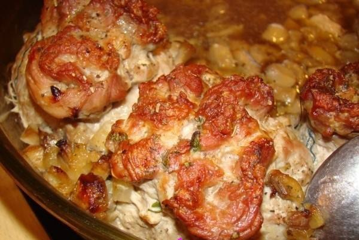

Необходимые ингредиенты:
1 килограмм мяса,
1 ложка сметаны,
Зелень (петрушки, укропа, розмарина, базилика, кинзы),
2 ложки меда,
1 ложка сока лимона.
Способ приготовления:
Мясо порезать на крупные кусочки, зелень измельчить. Смешиваем в тарелке всю зелень и солим, добавляем перец. Теперь смешаем зелень, мясо, сок лимона, мед. Оставим в холодильнике.
В смесь добавляем сметану, перемешиваем, выкладываем на противень, запекаем в духовке один час.